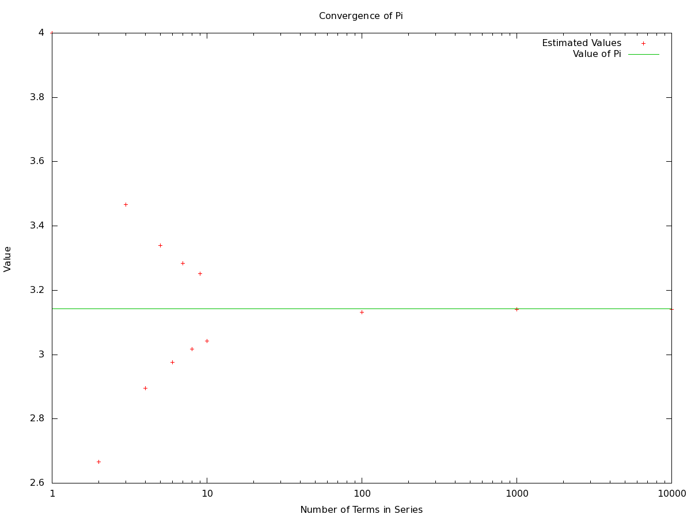
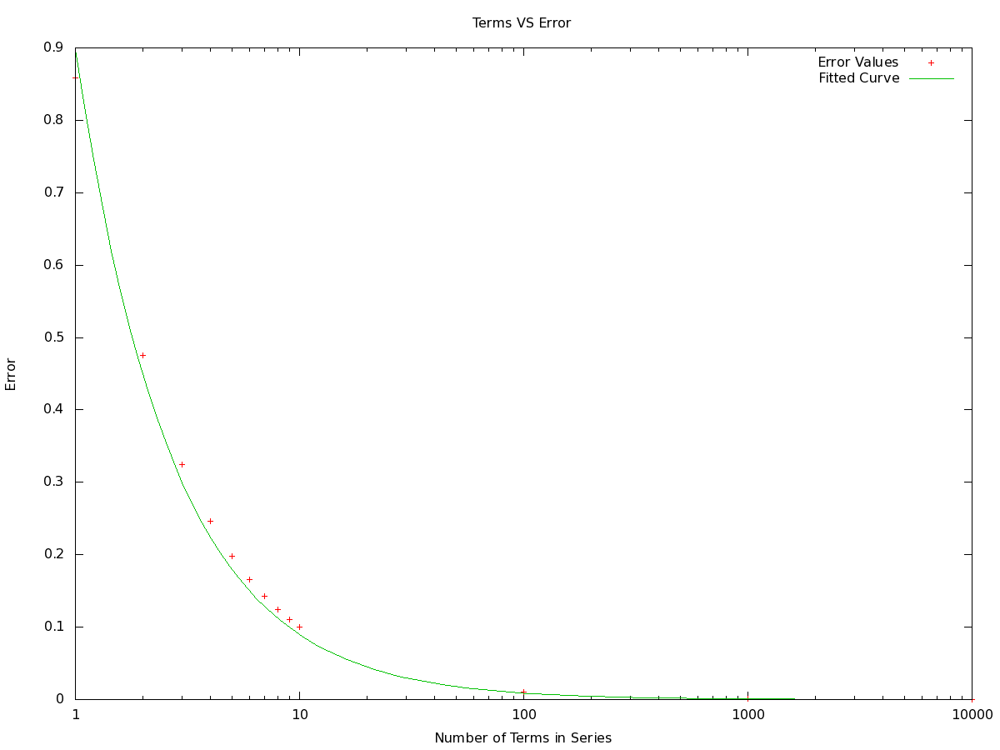
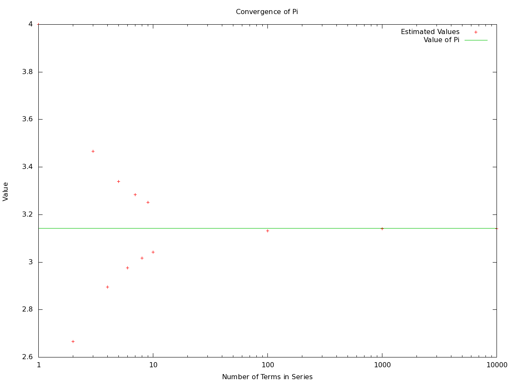
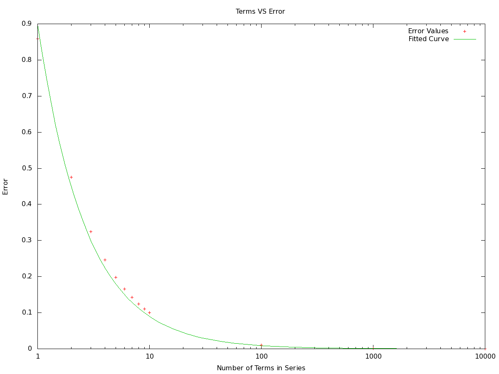

Estimating the value of Pi
Corey Mutnik
PHYS 305
Corey Mutnik
PHYS 305
Introduction:
In this weeks lab we attempted to estimate the value of Pi using its summation notation [1].
This sum runs from zero to infinity, making summing it impossible. The best estimations we can arrive at are those derived using high values of n. The larger the value of n wanted, the longer summing the series would take. The summation displayed as equation 1 can also be written as a Leibniz series:
pi/4 = 1 - 1/3 + 1/5 - 1/7 + 1/9 - ... (2)
Manually summing each successive term in the series, whether by hand or using a calculator, would be a grueling task. Using a stopwatch and a calculator I found that summing the first five terms in the series took an average of 29.59 seconds. This gives us a manual summing time of roughly 6 seconds per term. Summing the first 10,000 terms in this series, using this method, would take 60,000 seconds (over 16 hours). For this reason, it would be significantly more efficient to write a computer program that is capable of summing the Leibniz series.
Code:
// c++ program to estimate value of pi
#include <iostream>
#include <cmath> //includes math package [2]
using namespace std; //need for all programs
int main()
{
int k;
double val=0.0 , fval;
double den=1;
int num;
cout << "Enter Number of Terms" << endl;
cin >> num;
for (k=1;k<=num;k++)
{
val = val+ ( pow(-1,k+1)/den ); //causes the series to alternate between positive and negative signs
den = den+2; //changes the summation index, in order to generate each subsequent term in series
}
fval = 4*val; //series is pi/4 so we multiply generated answer by 4, to get the value of pi
double err=abs(M_PI - fval);
cout << "Estimate for Pi is " << fval << ", Associated Error " << err << endl;
return 0;
}
Results:
Analysis:
By knowing the value of Pi, 3.1415926, we are able to determine how accurate our estimates are [3]. The estimated value of Pi generated using an odd number of terms was higher than the expected value. In agreement with this; the estimated value of Pi generated using an even number of terms was less than the known value, as shown in figure 1. This is expected since the operators in the Leibniz series alternated between addition and subtraction. With each term added the result shown rise above the theoretical value, but by less than the previous term deviated below the value of pi. As the number of terms increased the estimated value of Pi was closer to its published value, causing the error to decays as 1/n, as seem in figure 2. Table 1 lists the values plotted in figure 1 and figure 2.
Conclusion:
The Leibniz series allowed for the calculation of Pi by means of a computer program. Although we can never sum something with infinite many terms, the error decreases inversely with the number of terms summed. This shows that as more terms in the sum are added the estimated value of Pi approaches the theoretical value with a higher degree of accuracy. While manually summing the first 10,000 terms of this series would take over 16 hours, the program I wrote was able to give a result before I was able to even press the button necessary to start the timer.
References:
1. Gorham, Peter. "Physics 305 Lab #1." P305_lab1. Phys.hawaii.edu, 12 Jan. 2015. Web. 18 Jan. 2015.
2. "Learn C++." : PI Calculation. N.p., n.d. Web. 18 Jan. 2015.
3. "Leibniz Formula for π." Wikipedia. Wikimedia Foundation, n.d. Web. 20 Jan. 2015.
In this weeks lab we attempted to estimate the value of Pi using its summation notation [1].
This sum runs from zero to infinity, making summing it impossible. The best estimations we can arrive at are those derived using high values of n. The larger the value of n wanted, the longer summing the series would take. The summation displayed as equation 1 can also be written as a Leibniz series:
 (1)
(1)pi/4 = 1 - 1/3 + 1/5 - 1/7 + 1/9 - ... (2)
Manually summing each successive term in the series, whether by hand or using a calculator, would be a grueling task. Using a stopwatch and a calculator I found that summing the first five terms in the series took an average of 29.59 seconds. This gives us a manual summing time of roughly 6 seconds per term. Summing the first 10,000 terms in this series, using this method, would take 60,000 seconds (over 16 hours). For this reason, it would be significantly more efficient to write a computer program that is capable of summing the Leibniz series.
Code:
// c++ program to estimate value of pi
#include <iostream>
#include <cmath> //includes math package [2]
using namespace std; //need for all programs
int main()
{
int k;
double val=0.0 , fval;
double den=1;
int num;
cout << "Enter Number of Terms" << endl;
cin >> num;
for (k=1;k<=num;k++)
{
val = val+ ( pow(-1,k+1)/den ); //causes the series to alternate between positive and negative signs
den = den+2; //changes the summation index, in order to generate each subsequent term in series
}
fval = 4*val; //series is pi/4 so we multiply generated answer by 4, to get the value of pi
double err=abs(M_PI - fval);
cout << "Estimate for Pi is " << fval << ", Associated Error " << err << endl;
return 0;
}
Results:
| Number of Terms Summed |
Estimated Value of Pi |
Error Associated (for designated number
of terms) |
| 1 |
4 |
0.858407 |
| 2 |
2.6667 |
0.474926 |
| 3 |
3.46667 |
0.325074 |
| 4 |
2.89524 |
0.246355 |
| 5 |
3.33968 |
0.19809 |
| 6 |
3.33968 |
0.165546 |
| 7 |
3.28374 |
0.142146 |
| 8 |
3.01707 |
0.124521 |
| 9 |
3.25237 |
0.110773 |
| 10 |
3.04184 |
0.099753 |
| 100 |
3.13159 |
0.00999975 |
| 1000 |
3.14059 |
0.001 |
| 10000 |
3.14149 |
0.0001 |
Table 1: Values

Figure 1: Estimated values of Pi

Figure 2: Error associated with result for term in series

Figure 1: Estimated values of Pi

Figure 2: Error associated with result for term in series
Analysis:
By knowing the value of Pi, 3.1415926, we are able to determine how accurate our estimates are [3]. The estimated value of Pi generated using an odd number of terms was higher than the expected value. In agreement with this; the estimated value of Pi generated using an even number of terms was less than the known value, as shown in figure 1. This is expected since the operators in the Leibniz series alternated between addition and subtraction. With each term added the result shown rise above the theoretical value, but by less than the previous term deviated below the value of pi. As the number of terms increased the estimated value of Pi was closer to its published value, causing the error to decays as 1/n, as seem in figure 2. Table 1 lists the values plotted in figure 1 and figure 2.
Conclusion:
The Leibniz series allowed for the calculation of Pi by means of a computer program. Although we can never sum something with infinite many terms, the error decreases inversely with the number of terms summed. This shows that as more terms in the sum are added the estimated value of Pi approaches the theoretical value with a higher degree of accuracy. While manually summing the first 10,000 terms of this series would take over 16 hours, the program I wrote was able to give a result before I was able to even press the button necessary to start the timer.
References:
1. Gorham, Peter. "Physics 305 Lab #1." P305_lab1. Phys.hawaii.edu, 12 Jan. 2015. Web. 18 Jan. 2015.
2. "Learn C++." : PI Calculation. N.p., n.d. Web. 18 Jan. 2015.
3. "Leibniz Formula for π." Wikipedia. Wikimedia Foundation, n.d. Web. 20 Jan. 2015.